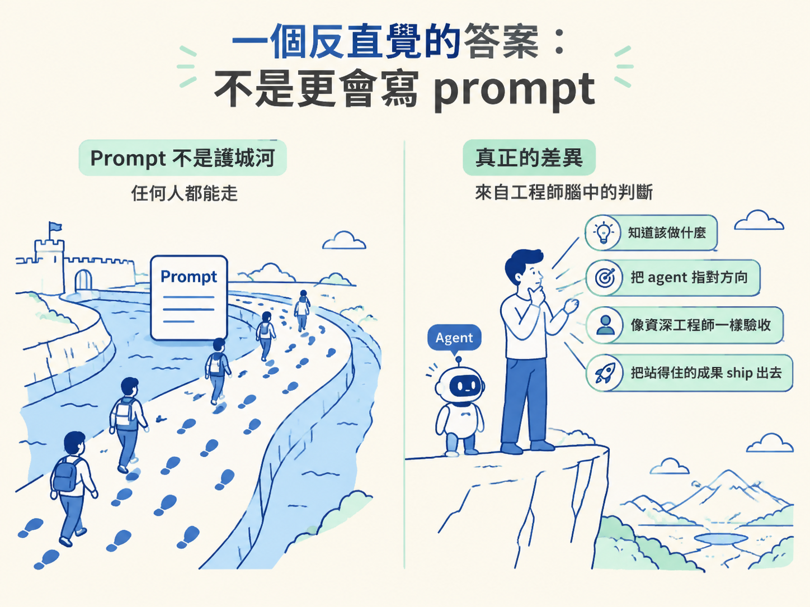

看完這一節，你能說清楚這門課的核心主張：寫程式已經被 AI 商品化，開發者的差異化在判斷力；這門課教的就是判斷力，而且它刻意不教你「用 prompt 生出自己看不懂的程式碼」。
想像一個場景。你花了好幾年練寫程式，一個框架接著一個框架啃，一層抽象接著一層抽象摸熟。結果某天你發現，只要用一段平鋪直敘的英文把需求寫清楚，回到座位上，程式碼已經躺在那裡等你了。咖啡都還沒涼。
這種事已經不是什麼驚人預言，它就是現在的日常。於是問題浮上來：如果誰都能生成程式碼，那你憑什麼值得被雇用？這一節講的就是這門課對這個問題的回答。
它不是一句勵志口號，而是整門課要建立的方向感。方向一開始就錯，後面學再多工具都只是白忙。
面對剛剛那個問題，最直覺的反應是：那我趕快去學更厲害的 prompt 技巧，比別人更會指揮 AI。
這條路聽起來合理，卻很快就會撞牆。理由很簡單：如果 AI 已經聰明到能替你寫程式，那它同樣聰明到能替你寫 prompt。你把 prompt 當護城河，等於把護城河蓋在對方也會走的路上。
真正拉開差距的，是講師稱為 judgment（判斷力）的那一組能力。拆開來看有四件事：
這四件事都跟「打得出漂亮 prompt」無關，它們都來自「腦子裡有清楚的判斷」。

這裡有一個值得記住的機制。很多人以為 AI 會順手把判斷也一起做掉，事實恰好相反。
Agent 本身不會給你任何判斷力，它做的是提高「沒有判斷力」的成本。以前一個沒有判斷力的人，產出速度慢，錯誤也被速度拖著慢慢浮現，還來得及修。現在 agent 一次噴出大量程式碼，你若沒有判斷力去篩選、質疑、驗收，錯誤只會用更快的速度累積、複利。
換句話說，AI 把「寫得快」變成標配，於是把「判斷得好不好」從加分項拉成及格線。這也是為什麼不少資深工程師反而覺得 AI 用起來很順手：他們本來就有判斷力，只是過去被寫程式的苦工稀釋掉了。
而這帶出整門課最重要的好消息：判斷力是可以被教的。教判斷力，就是這門課存在的理由。
把方向講清楚，也要把相反面講清楚。這門課明確不會把你變成「用 prompt 生出自己看不懂的碼」的人，這件事被當成反目標。
它要的是剛好相反的結果：你仍然是那個工程師，程式碼的架構與正確性依然由你負責。AI 只是你請得到的、最快也最聰明的一位 junior，有時甚至到 mid 等級的開發者，而你的工作是指揮它。
用職場來比喻，就像你帶一個能力很強但沒有全局觀的新人。你可以把事情全丟給他，看起來很省事；但專案一大，你就會發現自己簽了一堆看不懂的程式碼，出事時沒人能負責。課程要練的，是你成為那個帶得動、看得懂、也扛得起的人。
最後把視角拉遠一點。我們正處在一場可能一代才出現一次的產業位移裡，而這種位移有個固定規律：它對拒絕移動的人最殘酷，同時也是願意往裡踩的人最大的機會。
講師在電子報裡分享的 AI 就業資料說的是同一件事：職缺不是消失，而是改變形狀，願意適應的人會往前站。這門課不是要你追逐每一次炫技，而是要你站到這個位移正確的一側。
寫程式已經從「難的部分」變成「基本配備」，所以比別人更會寫程式不再是差異化。真正的差異是判斷力：知道做什麼、把 agent 指對方向、像資深工程師一樣驗收它的產出。Agent 不會給你判斷力，只會拉高沒有判斷力的代價；而判斷力可以被教，這就是整門課。它甚至刻意不教你用 prompt 盲生看不懂的碼，因為你要一直當那個拍板與負責的工程師。
知道這門課要練的是判斷力之後，下一個問題自然是：你適不適合，該用什麼姿態進來。下一節會帶你做一次先備條件自檢，確認手上的牌和這門課要的牌對不對得上。